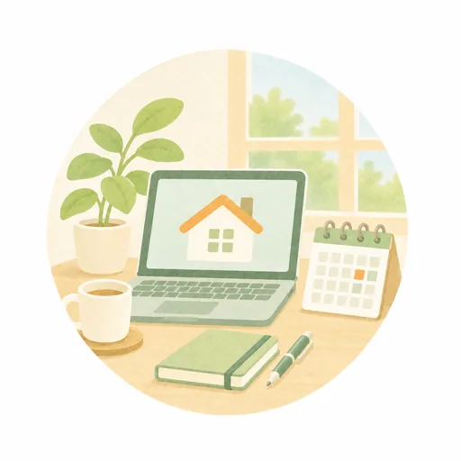
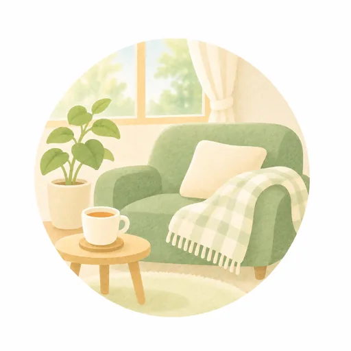
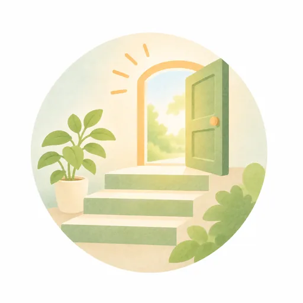
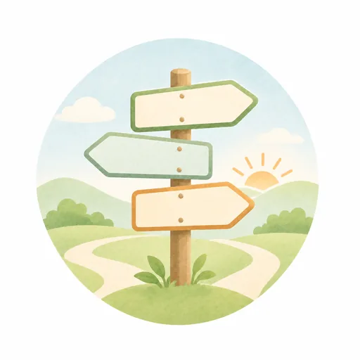

このブラウザでは、チェックを保存できません。バックアップの方法をご覧ください。
LINEの中で開いています。チェックを残すには、Safari・Chromeで開き直すのがおすすめです。
← 特典の一覧へ
仕事がしんどい時の、選択肢の地図
辞めるか、我慢するか。その二択ではありません。地図は、次の5つの場所でできています。
-
場所 1
今の状態に気づく
眠れない、朝起きられない、休みがち。以前と違う変化が続いていないかを見ます。
-

場所 2
今の会社でできること
有給休暇、業務量の調整、在宅勤務の相談があります。
-

場所 3
休む
休む前に、就業規則で「休職できる期間の上限」「期間が終わった時の扱い」「休職中の給与」を確認します。
-

場所 4
戻る
医師、産業医、会社の判断を経て、段階的に戻ります。
-

場所 5
環境を変える
異動、業務の調整、転職を並べて比べます。転職は、その一つです。
どこからでも、前に戻っていい
※診断や休職の判断を示すものではありません。病気かどうか、休むべきかどうかは、医師が判断します。
※厚生労働省などの公的資料をもとに作成しています(2026年10月時点)。制度は変わることがあります。